SpecSearch：按 GPU 和负载选择推测解码策略
Selin Yildirim、Ali Zeyrek 和 Deming Chen 均来自伊利诺伊大学厄巴纳－香槟分校（UIUC）。这篇预印本用 Qwen3-4B 和 DFlash 研究同一套推理服务该在什么时候启用推测解码、每步草稿应写多长，以及权重和 KV 缓存应使用什么精度。核对论文及其发布页后，未核验到可归属本论文的公开代码或项目页。SpecSearch，arXiv v1
推测解码的最优配置同时受工作负载、GPU 和可用显存影响。同样在 RTX 5090 上，短输出时 DFlash 的吞吐在低并发可达自回归解码的 3.50 倍，到了高并发却只剩 0.76 倍，固定的草稿长度和精度无法覆盖这种变化。
1. 背景和问题
1.1 一次验证可以推进多少生成进度
自回归解码每步读取当前上下文，让目标模型给出下一个令牌分布，再将新令牌追加到上下文。属于同一条请求的两步有因果依赖。即使批处理能让许多请求一起前进，单条序列也要经过多轮目标模型调用。对一个小批次，解码往往要从显存读入大量共享权重，而每条请求只消费一步结果。如果能在同一次搬运权重之后验证若干候选位置，便有机会把更多已提交令牌摊到同一轮上。这里的已提交专指经目标模型验证、最终进入输出的令牌，草稿算了几步和用户实际收到几个字是两个量。
推测解码把候选产生交给成本较低的草稿器，目标模型并行验证候选前缀。匹配的部分能够连续提交，遇到首个拒绝后由既定的目标校正流程处理，后续候选也就失去沿用的依据。在满足正确验证规则时，即使草稿器产生的序列质量较低，目标采样分布依然可以保留，代价体现在接受前缀变短以及多做了无用计算。DFlash 条件化于目标模型特征，用块扩散的一次前向生成一组候选，避免小模型线性生成每个草稿位置的串行开销。论文将它固定为实验草稿器，通过改变块内候选长度和精度来隔离部署策略问题。Medusa 的并行头和树式验证、EAGLE 的目标特征草拟也试图摊薄解码成本，但其缓冲区、计算路径和产出结构不同。
低并发时，验证若干候选新增的算术有机会容纳在原本受访存限制的时间里。并发升高后，普通自回归服务本身就在一次权重搬运内为大量请求产生结果，推测验证仍按请求数乘上候选位置数扩张工作。即便每轮接受的平均长度持平，多出来的验证位置也会争用矩阵算力，错误草稿的开销更加显眼。输出上限还会改变进程的时间构成。较短的请求可能在批队列充满之后很快完成，长请求的上下文不断长大，更容易在后半段遇到缓存压力。两种负载的最优点可能处在不同区域，所以服务侧很难从一个平均接受长度判断是否应开启推测。
1.2 同一张卡出现吞吐反转
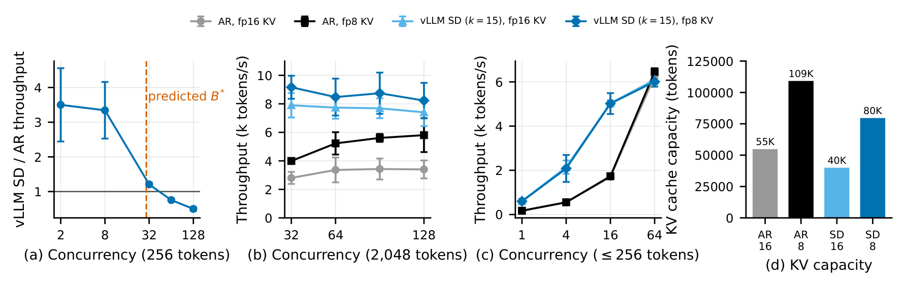
Figure 2 的四幅子图把两种瓶颈分开看。第一幅固定输出上限二百五十六和半精度缓存，横轴为并发，纵轴是推测解码除以自回归解码的输出吞吐。论文给出两路、三十二路和六十四路分别为三点五倍、一点二一倍和零点七六倍，橙色虚线是模型给出的屋脊拐点，曲线跌破一倍的位置仍取决于候选长度和实际核效率。第二幅把输出上限换为二千零四十八，并采用绝对吞吐作纵轴，低精度缓存的推测配置在三十二至一百二十八路都领先。第三幅聚焦短输出的低至高并发，蓝线起步高，右端黑线已经追上或超过它。第四幅以可缓存令牌计量，半精度自回归约有五万五千个位置，半精度推测约有四万个。两边改用较低精度缓存后容量各自接近翻倍，草稿器占用的空间仍然存在。四幅图共同指出，增大并发会提高验证算术密度，延长输出会改变缓存预算的相对价值，两项会同时发生。部署人员要沿着实际的长短输出分布判断候选策略，低并发时的漂亮倍数只能描述左侧那一小段曲线。
连续批处理让一个请求结束时另一个等待请求可以加入，按块分页的 KV 缓存则降低碎片，并允许请求以非连续物理位置保存上下文。分页减少了浪费，长期驻留的权重、图捕获内存和验证缓冲依然要从总预算扣除。启动时有足够空间只保证引擎能初始化，某个长度分布下还能否避免抢占要看剩下的缓存块和请求的实际上下文。客户端提交的并发上限与每个解码步看到的有效批大小也会分岔。请求终止、补入、预填充与抢占都可能改变批的组成，长短样本混跑时这种差异尤其明显。本文因此区分启动层的模式和精度，与运行中根据已调度请求数改变的候选长度。
1.3 从服务目标反推决策范围
论文优化的是候选配置下聚合的输出令牌吞吐，也报告一批给定工作负载整轮跑完的墙钟时间比。两者对于离线成批生成、文本再标注、长答案合成等追求设备产出的场景很直接。在线交互产生的是另一组需求：首令牌过晚时用户已经离开，后续流式间隔变大时页面已经超时，迟到文本仍可能计入设备输出计数。以每秒满足首令牌和后续时延目标的请求数定义 goodput，需要单条请求达标判定以及实时到达、排队、取消和完成的记录。论文给出的是吞吐曲线、墙钟比和显存可行性，证据只覆盖这些验收口径。
把这个区别放回推荐中的大模型链路，长摘要、用户兴趣归纳或候选解释可以共用生成器，但离线批刷与在线首屏的时间分配差别很大。离线预算常看阶段总产出，吞吐上升能够缩短批量处理窗口的前提是输入规模、输出质量、令牌量与调度环境都对应。在线链路常把整个生成器压在上游召回和下游排序之间，高并发下一次验证更长可能占住其他请求的计算时段。即使全批次更快结束，一部分请求的首令牌或相邻令牌间隔也可能恶化。若部分请求被取消，令牌吞吐甚至会包含用户永远读不到的工作。把这些量分开，才能理解这篇论文为什么适合先做部署候选筛选，以及后续还欠哪类测量。
固定精度同样会把不同源头的收益揉在一起。缓存精度主要改变每个上下文令牌占用的空间，也可能改变注意力内核及目标数值路径。目标权重精度影响基线模型本身的输出分布和内核效率，草稿权重则先影响提议质量，并通过接受长度反映到整轮成本。相同的显存节约额度，放到三处可以对应完全不同的吞吐变化。全局只开一套高压缩配置，很难解释到底是多容纳了请求、减少了搬运，还是更换了运行实现。SpecSearch 把这几处精度和是否投机、如何设置草稿长度放进同一个部署搜索，先筛显存，再按真实运行或源卡数据做最终决策，试图保留这种因果区分所需的候选对照。
已有系统已经提供更细的控制手段。文中提到 vLLM 能按有效批区间接收用户给定的草稿长度映射，SGLang 的自适应路线可以参考观测到的接受率。具体到本文，同一组接受率附近，改变输出长度与缓存精度就可能造成明显差异，因此仅观察接受率仍看不到因抢占或者不同内核带来的吞吐改写。MagicDec 在另一条路径上用稀疏缓存和自推测处理长上下文，TurboSpec 更直接面对服务 goodput，AdaServe 关心请求时延约束。SpecSearch 要回答的决策更靠前，从一套硬件和一个负载描述出发，决定引擎用哪种策略启动，并在已经启用推测的前提下确定运行时是否值得调整草稿长度。
2. 方法
2.1 用显存模型和屋脊线缩小候选集
SpecSearch 以 GPU 带宽、峰值算力、可分给引擎的显存，以及模型和负载的形状为输入。策略包含草稿长度、目标和草稿权重各自的精度、缓存精度与图执行方式。算力和带宽用于估计验证开始变贵的区间，预算负责排除无法启动或无法容纳目标并发的配置。式（1）把两类限制中更直接可核验的显存限制写成可拆分的账。
符号解释：$\theta$ 是部署策略，$P_t,P_d$ 是目标与草稿模型参数量，$b_w^t,b_w^d$ 是各自每参数字节数。$\kappa$ 是每个上下文令牌的缓存字节，二对应键和值，$L_t,L_d$ 为两模型层数，$H_{\rm kv},d,b_{\rm kv}$ 依次为缓存头数、头维度和缓存元素字节数。$S_0$ 和 $\ell$ 分别是提示长度及输出上限，$S$ 是估计的单请求总长度，$B$ 是批大小。$n_c$ 个目标层以隐藏维度 $h$ 保留上下文缓冲，$b$ 是激活字节数，$V$ 是词表大小，$k$ 是草稿长度。式中验证分数占用随词表、批和验证位置增长，$C_{\rm graph}$ 是 CUDA 或 HIP 图开销，在即时执行模式取零，$\rho_g$ 是设备及分配器开销。草稿缓存来自目标隐藏状态的键值投影，关掉草稿器时有关的权重、缓存和缓冲应按自回归路径预算。
符号解释：式（2）和（3）中，$M_g$ 是引擎显存预算，$W$ 是两类权重的和，$C_{\rm act}$ 包含上下文和验证缓冲，$N_{\rm tok}$ 是预算剩余空间按每令牌缓存成本换算的容量，$C_{\max}$ 是等长假设下的并发估算，$C_{\rm req}$ 是所需并发。固定开销须按对应的设备、引擎和批量设定，尤其验证缓冲会随草稿长度和批变化。小数并发代表容量比，实际调度还受整数请求、页块取整和不同上下文长度影响。全校准附录对 MI300X 和 RTX 5090 用批一与三十二的启动拆账，在批量上插值设定运行时开销，这条取数路径属于部署卡初始化。
符号解释：式（4）里的 $t_{\rm step}$ 是单个解码步的近似时间，$\beta_g$ 为显存带宽，$\Phi_g$ 为峰值计算吞吐，$\phi$ 为目标模型单位置近似算术量。前项是权重搬运时间，后项是为整批候选和一个额外位置做目标验证的时间。低并发由前项主导时，正文用平均接受长度 $\bar\tau$ 近似加速。高并发时，正文用 $\bar\tau/(k+1)$ 说明额外计算怎样吞掉收益。这是解释趋势的近似，完整服务还包含缓存读取、预填充、草稿计算和调度。
符号解释：式（5）的 $B^\star$ 是令自回归路径两项时间相等所得到的临界批，$\eta$ 是有效算力占峰值的比例，$b_w^t$ 是目标权重每参数字节数。将目标的算术量近似为两倍参数量后，参数量抵消，阈值由算力带宽比、权重精度和有效算力系数支配。给定相同设备，低精度权重改变读权重的代价及可用内核，所以不能拿原精度的估算直接套用。
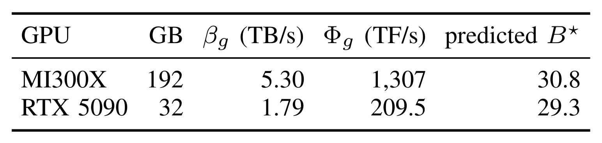
Table I 左侧列的是物理卡显存，后面依次是理论峰值带宽、密集半精度矩阵算力和算出的临界批。MI300X 的带宽和算力分别为每秒五点三零太字节和一千三百零七万亿次，RTX 5090 对应一点七九太字节和二百零九点五万亿次。直接比较峰值比会认为两卡切换区间相距较远，附录给两卡分别取零点一二五和零点二五的有效算力因子，在半精度代入后得到三十点八和二十九点三。这对比说明实际核利用率会改变阈值，表头的物理显存也与后文统一划出的十五点七 GiB 引擎预算分属两个量。阈值提示在三十二路附近应看到哪类成本开始抬升，但不能直接用它替代慢于自回归的交叉点。第一幅动机图中三十二路仍略快，证明读这个数应结合接受长度与差异化运行开销。把设备换成另一版驱动、注意力后端或不同的权重格式，重新用同一纸面峰值计算至多得到候选范围，配置胜负仍取决于设备执行路径。
2.2 用部署卡实测编译启动策略与草稿映射
符号解释：式（6）在设备的候选集合 $\Theta_g$ 中找到工作负载 $(B,\ell)$ 下输出吞吐 $\operatorname{Tput}_g$ 最大的策略 $\theta^\star$，同时满足峰值显存限制和允许的质量差 $\varepsilon$。$\operatorname{QGap}$ 对有损的目标权重及缓存设置起作用，正确的目标验证机制允许改变草稿器及其长度而维持既定目标分布。论文给出质量约束的设计形式，主要性能表并未展开各质量容忍度下的实测前沿。成本模型先确定哪些配置值得跑，最终的排序由部署卡上的 vLLM 实测给出。
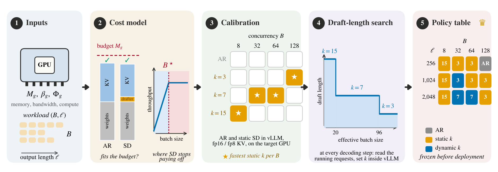
Figure 1 由左至右串起五个步骤。第一格输入的是给引擎的显存预算、设备带宽和计算峰值，以及提交并发和输出上限。第二格左侧画出自回归与推测的显存构成，右侧标出可能的计算转折，二者分别负责排除放不下的动作和约束应关注的并发区间。第三格在真机上比较自回归和固定候选长度的推测，对两种缓存精度分别做记录，星号示意某个锚点较快的草稿长度。第四格把锚点的选择编译成有效批大小到草稿长度的分段表，运行时每轮读取当前活动请求数，只在已启动的推测引擎内部改变长度。第五格是部署前冻结的策略表，以负载为键返回自回归、静态推测或动态推测。图的色块和草稿数字是流程示意，实际四卡条目见实验的策略表。例如某个服务预期提交六十四路，启动时已经选好缓存精度，随后活动请求缩减到十几路时才可能走较长草稿。这一步不会在请求期间重新加载目标权重或更换缓存布局，也不会调用选择模型在线逐轮打分。全校准要承担启动拆账及部署卡候选运行成本，换软件栈或换模型时，已有映射的时效性需要核验。该流程还保留了启动方式的粒度，查询到动态策略意味着启动侧已经接受执行过程中使用不同验证形状的成本。
在固定权重的主实验中，候选包含两种缓存精度乘以自回归或三档静态草稿，随后还比较每种缓存精度的动态表。静态运行帮助挑出四个并发锚点附近合理的长度，动态运行检验真实的活动批轨迹是否能从分段映射获益。同一张卡可能在某个输出档选择自回归，在另一档选动态推测。原因是前者根本不驻留草稿器，后者需要预留支持推测及相关缓存的空间。对于以同一进程混合多种任务为主的服务，启动配置必须在整体负载和每请求约束下共同评估，论文查表所用的负载网格更加规整。
2.3 用源卡测量训练 Jev 策略选择器
学习路线把策略搜索转化为八选一。每种缓存精度下有自回归和长度三、七、十五的三种静态推测。测试卡完全留出，在另三张源卡上构造带标签的工作负载，每张卡有十二种负载乘八种配置。一个训练问题描述查询卡的元数据、并发、输出上限与打乱顺序的八个候选，标签来自该负载实测吞吐最高的动作。文本还可以提供源卡测量中按负载接近度检索的记录，每张源卡最多十六条，并加入能取得的注意力后端、权重精度及软件版本。训练阶段模拟零、四、八、十六条源查询卡观测，排除查询负载结果，也混入少量要求读取已提供数值的题。源卡观测用于训练设计，部署卡依然没有测量输入。选训练步数时使用两张源卡训练、另一张开发验证，再以选定步数从初始化在三张源卡重新拟合。
符号解释：$i$ 是决策样本，$h_i$ 是 Qwen3-4B 对结构化提示的末位隐藏表示，$W_{A:H}$ 是冻结语言头中八个答案字母对应的行，$W_c$ 是可训练的零初始化线性修正，$z_i$ 是八个答案的分数。$N$ 是样本数，$y_i$ 是实测最优候选对应的字母，交叉熵提高该字母的概率。模型还训练注意力查询、键、值和输出投影上的秩八 LoRA，其余主干参数冻结。附录给出学习率万分之一、有效批八及源卡验证选出的百步或两百步。损失对错选按分类计，对吞吐几乎打平和掉速两成的错选采用同类标签机制，检验价值因此应回到实测吞吐的损失幅度，而不能只看猜中格子数。
部署时取八个答案分数的最大项直接返回策略，无需自回归生成解释。冻结版本使用原语言头和零修正，可用于判断是否有必要训练。源卡基线还包括逆距离加权、浅树、表格回归和小型数值网络。论文附录列出由 Jev 和逆距离加权的静态分数推导出的动态映射，规则是在各锚点和缓存精度下限制为三个推测动作再选草稿长度。此处的动态表属于预测产物，实际留卡评估运行的是预测选出的静态配置。源卡数据替代了部署卡候选搜索，留出卡最终性能仍靠隔离的实测来检验。
3. 实验结果
3.1 固定的引擎、模型与负载网格
主设置用 Qwen3-4B 与块大小十六的 DFlash，在 RTX 5090、MI300X、H100、L40 上跑 vLLM，并统一给主实验引擎划出 15.7 GiB。提示来自 GSM8K、MATH-500、MBPP、MT-Bench 和 HumanEval，分别带入数学、代码和对话生成的文本。实验没有为每个任务公布独立的质量和时延结论。提交并发为八、三十二、六十四和一百二十八，输出上限为二百五十六、一千零二十四和二千零四十八，形成十二格。基线由 vLLM 自回归和默认草稿长度十五的推测解码组成，两边都可选 FP16 或 FP8 作为缓存精度。成本模型关闭时，静态八个配置乘十二格和三个种子是二百八十八轮，动态两张表再加七十二轮，共三百六十轮每卡。这是穷举对照的运行量，论文给出部分显存可行性的筛除结果，未给出每卡全部校准墙钟或完整工作负载上的实测节省比例。
输出吞吐以千令牌每秒报告，批次墙钟相对加速在另一张表中报告。原始倍数列以同格的半精度缓存自回归墙钟为基本标尺，最右边的改善列再与候选组内的较强基线比较。对每张卡和每格必须先对齐指标、分母及所选配置，下划线是策略选择，粗体是格内最高均值。若输出数量或停止情况变化，聚合吞吐比与跑完整轮的时间比也会分开。实验没有公布生产到达过程、逐请求首令牌和令牌间时延分位数，因而无法从这些表重建请求 goodput。
3.2 启动是否可行与缓存能容纳多少请求
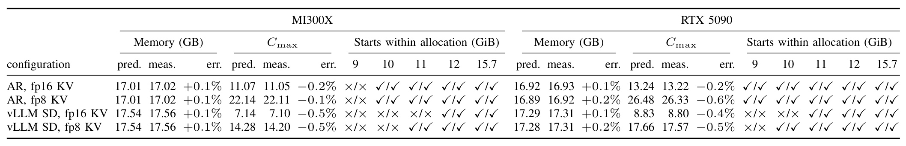
Table II 左半是 MI300X，右半是 RTX 5090。各自从左到右给出内存占用、最大并发的预测与实测，以及从九到十五点七 GiB 的五档启动预算结果。可行性列的斜线前是模型预测、后是 vLLM 结果，叉号代表放不下。两卡各二十个配置预算组合中，分别正确排除了七个和三个，其余也都正确接受。RTX 5090 上半精度缓存的推测要到十一 GiB 才成功，低精度缓存版本从十 GiB 开始；MI300X 同类配置分别要到十二和十一 GiB。引擎总内存误差上限分别为百分之零点一和零点二，最大并发分别为百分之零点五和零点六。参考值来自已有引擎对各项内存的测量，预算列则在不同上限检查能否启动，两种证据共同说明此处的可行性模型有用。表中的小数并发是容量换算，某个配置启动成功之后还可能在较长请求上用尽缓存。附录将一部分小误差建立在两批的启动拆账和插值之上，所以不能把它解读成全新卡完全无实测也必有同等误差。两块设备在同样的启动档位上对缓存精度的敏感度也不同。MI300X 在九 GiB 连两个自回归候选都放不下，到了十 GiB 两个自回归都能启动，两个推测仍失败。RTX 5090 在九 GiB 已经能启动两个自回归，继续上调预算时八位缓存比半精度缓存的推测先跨过启动线。若只从表头的物理显存大小推断低预算结果，很容易认为容量更大的 MI300X 始终占优。实际比较针对人为切出的引擎预算和特定软件栈，设备各自的常驻成本和预算分配先决定能跑的集合。本文中不需设备拟合的每令牌缓存成本和草稿权重项约在百分之一以内，低误差并非所有项都靠拟合才得到。
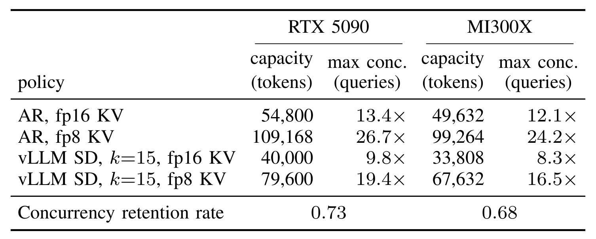
Table X 用四千零九十六输出上限把缓存压力单独拉高。列头对两张卡分别给出可缓存令牌和按该长度换算的理论并发。RTX 5090 在半精度缓存下，自回归有五万四千八百个位置，推测有四万个，换算大约从十三点四路降到九点八路。MI300X 对照是四万九千六百三十二和三万三千八百零八个位置，比例约零点六八。在八位缓存下，两类策略又大致各获一倍额外空间，但推测同时需要给草稿权重和工作区预留显存，同精度的容量差仍在。图中并发以小数列出，直观表达缓存空间可被多少份理想上下文填满。服务中的提示长度、实际输出长度、页取整和活动批随时间变化都会让真实同时运行的请求数偏离这个静态数。这也解释为什么主结果能提交一百二十八路，并不意味着一百二十八个达到输出上限的上下文可以同时无抢占驻留。若想解释一次抢占，应再查实际在场请求的上下文长度与各请求占用的页数。这组数据也给主结果中的短输出与长输出之分提供了机制证据。请求上下文很短时，虽然两种精度都能减少空间占用，原本缓存池就能容纳活跃请求，吞吐更容易由计算或调度限制。接近长输出的预算边界时，少一份缓存字节就会影响到任务能否同时在场，抢占后重新计算也会摊进全批用时。表里的推测使用固定十五的草稿，切换到短草稿会改写验证缓冲，精度和草稿长度可能共同移动容量阈值。进一步部署时应按启动配置和实际长度重新估计，不能把零点七三或零点六八当成所有草稿器的固定比例。
3.3 全校准在四张卡上找到了哪些配置
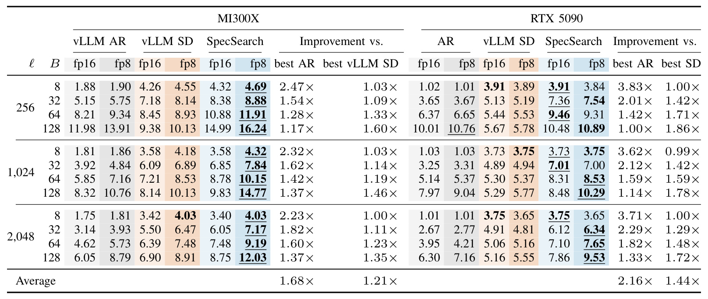
Table III 的单位是千输出令牌每秒。每个设备块把两种缓存精度下的自回归、固定十五的推测和全校准策略并排，再给出相对最佳基线的比值。两卡在低并发八路时，长草稿基线已经很强，搜索相对默认推测的收益接近一倍。把并发提到一百二十八、输出上限设为二千零四十八后，MI300X 达十二点零三，RTX 5090 达九点五三，而两卡八位缓存的默认推测分别只有八点九一和五点五五。逐格选中的对最佳自回归均值为一点六八倍和二点一六倍，对默认推测均值为一点二一倍和一点四四倍。高并发短输出仍有例外，RTX 5090 的二百五十六档在默认推测下只有五点七八，选出的动作回到八位缓存自回归，改善列相对最佳自回归为一倍。全校准允许关掉草稿，因此该格相对推测的高增益主要说明默认策略选错，不宜算作推测机制本身的加速。横向比较两个精度列也能看出收益随输出长度走。MI300X 的二百五十六输出从三十二路增加到六十四路时，八位默认推测只从八点一四升到八点九三，同期较好的搜索结果由八点八八升到十一点九一。这里直接显示了默认配置上升趋缓，搜索仍能利用新增并发。切到同卡二千零四十八输出和六十四路，默认八位为七点四八，搜索八位为九点一九，虽然相对有收益，绝对产出低于短输出的同并发格。给负载选策略时，这两种比较应分别保留，前者用于鉴别动作，后者用于估计同卡能服务多少输出。若真实流量以短输出为主，不能把末行的长输出差距当成常见净收益。
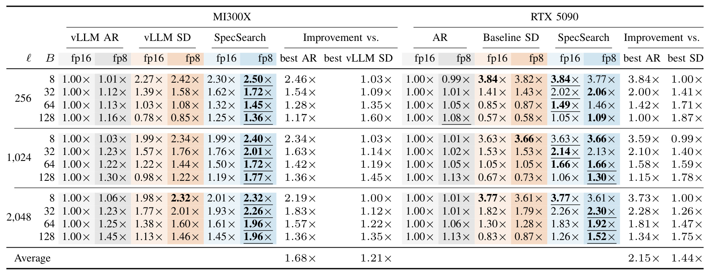
Table IV 沿用同一张负载网格，把格内时间转换成相对墙钟倍数。每块第一列的半精度自回归为一倍，后面相对最佳自回归和最佳默认推测的改善列采用相应较强分母。在最长输出和最大并发下，两卡选出的八位策略对半精度自回归分别为一点九六倍和一点五二倍，换到最佳自回归分母时分别只有一点三六倍和一点三四倍。RTX 5090 短输出最大并发的默认推测墙钟只有约零点五七至零点五八倍，而选出的自回归相对最佳自回归是一倍。把这几列并排看就能确定改善来自超过已有强基线，还是挽回了启动时开启推测的损失。墙钟计的是同轮工作负载的结束时间，分母也属于一个运行轮次。该结果可以描述整批什么时候跑完，无法拆出其中最慢请求等待多久、首令牌什么时候出现或每条流式输出在何时超过时延目标。另一个可核对的差异是最长输出最大并发下，RTX 5090 对默认推测的吞吐改善约一点七二倍，墙钟表对应约一点七五倍。MI300X 这一格的两个相对倍数恰好都约为一点三五。二者接近体现它们衡量同一批工作，但不能默认两者逐格相等，也不宜从已经四舍五入的格内值倒推单次请求的耗时。实际复核应由同一条件下每轮产出的令牌总数和起止时间重算，再按论文协议聚合各次重复。只保留相对数会丢掉原始墙钟和令牌数，使得测试方无法区分微小的波动与稳定的配置收益。对接批作业时，可以先保留这组墙钟作整轮验收，再用吞吐检查令牌产出是否对应。
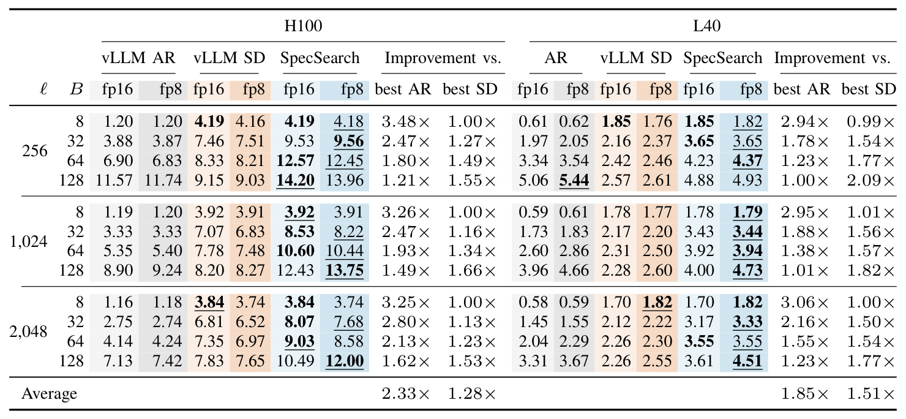
Table XII 将同样的吞吐对照扩展到 H100 和 L40。两张卡也只给引擎十五点七 GiB，因此这里的物理卡上限没有直接放宽实验的缓存预算。H100 相对最佳自回归和默认推测的平均比为二点三三和一点二八，L40 则为一点八五和一点五一。以二千零四十八输出、一百二十八路为例，H100 选八位缓存推测达到十二点零零千令牌每秒，胜过最佳默认推测的七点八三。L40 在相同格达到四点五一，最佳默认推测为二点五五。对默认推测的相对改善在 L40 更大，绝对吞吐仍显著低于 H100。该行也显示基线会随长度和精度变动，若只比较默认半精度版本，可能夸大搜索本身带来的改善。四卡平均可以描述这套测试网格，实际采购或流量调度仍要按所承担的负载占比和可用预算计算各自的绝对交付量。同张表的 H100 二百五十六输出在八路时，固定草稿的半精度缓存已有四点一九千令牌每秒，搜索的相应值也为四点一九。到了六十四路，搜索半精度缓存达到十二点五七，明显高于默认推测的八点三三。这两个单元格把搜索收益集中在什么负载下说明得比平均值更清楚。L40 的短输出最大并发则由八位自回归支撑胜负，其两种默认推测都只有二点六左右。主结果应按卡和负载保留这些能翻转的格，否则会把更大的相对收益误读成每一种推测设置都值得开启。比较不同卡的速度时还要记得，这里只测试等预算情形。相同预算也不会抹平硬件差异，绝对令牌率直接决定同批任务需要几张卡同时运行。
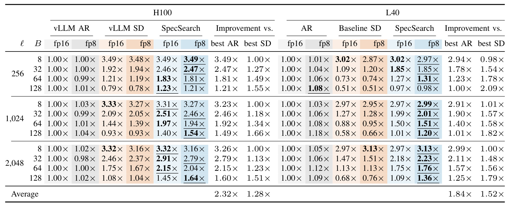
Table XIII 把另外两张卡的完整执行时间切回同格半精度自回归的参考系，并在最右继续给出相对强基线的改善。平均相对最佳自回归为 H100 的二点三二倍和 L40 的一点八四倍，与吞吐表的二点三三和一点八五接近。细看 L40 最大并发短输出，默认两档推测的墙钟都约为零点五一倍，所选八位自回归对半精度自回归为一点零八倍，对最强自回归则只有一倍。H100 同格依然选短草稿，最右两列约为一点二一和一点五五，跨卡的结论因此是启动判断要看执行环境。最低并发的 L40 短输出格，选出配置对最佳默认推测的墙钟改善列还有零点九八倍的轻微倒退。即使整体均值上升，这一格也应保留。原文没有逐格置信区间，接近一倍的差距读作记录到的运行结果，能否稳定复现还要靠重复测量。H100 二千零四十八输出的六十四路，最强半精度缓存搜索相对半精度自回归为二点一五倍，最后一列相对最佳默认推测缩小到一点二三倍。同任务的一百二十八路变化更明显，选中的缓存精度又换为八位，整轮加速的基线分母也随之不同。这说明单看同一设备并不能固定一个参考策略，更不能把每个格子的最大加速理解成部署上线的服务承诺。从运维角度复核该表时，需要同时记录基线走的是哪一档缓存、是否加载草稿器、完成了多少请求。否则仅看到倍率下降，无法判断是搜索策略变慢，还是对照组变强。墙钟表中接近一倍的行尤其容易受种子和停止位置影响，重测宜保留每轮原始记录。
把 Table III 和 XII 的四个已报告均值等权复核，最佳自回归相对数约为 2.01×，最佳默认推测相对数约为 1.36×，与摘要一致。结论章另写相对自回归 2.09×，未交代可据以重算的聚合口径。本文据逐卡吞吐表采用约 2.01×，不把两个数字混作一项结果。
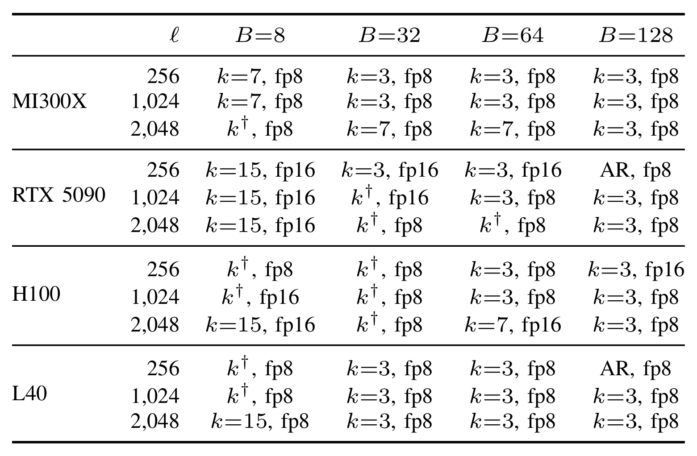
Table V 将前面结果还原为动作。每张卡三行表示三档输出上限，四个列头是提交并发，单元格同时给出解码模式或草稿长度，以及启动时选定的缓存精度。带匕首的长度代表使用动态映射。MI300X 十二格全选八位缓存推测，仅在低并发长输出一格用动态，其余偏向固定的三或七。RTX 5090 的短输出随着并发升高从十五切到三，最后一格启动八位缓存自回归。L40 也在同一个短输出负载切回自回归，H100 在同格保持半精度缓存的三令牌草稿。H100 五格选动态，RTX 5090 三格，L40 两格。数字体现的是既定候选集合下的实际策略组合。若站在固定草稿的基线上读 Table III，收益包含短草稿、动态和避免启用推测三类变化，不能把整张表的提升全归到动态映射。反过来，匕首未出现的格也并非没有完成动态比较，只表示该格最终选了别的配置。因此逐格复跑时应同时保存启动选项和实际有效批轨迹，后者决定动态分段是否真正触发。
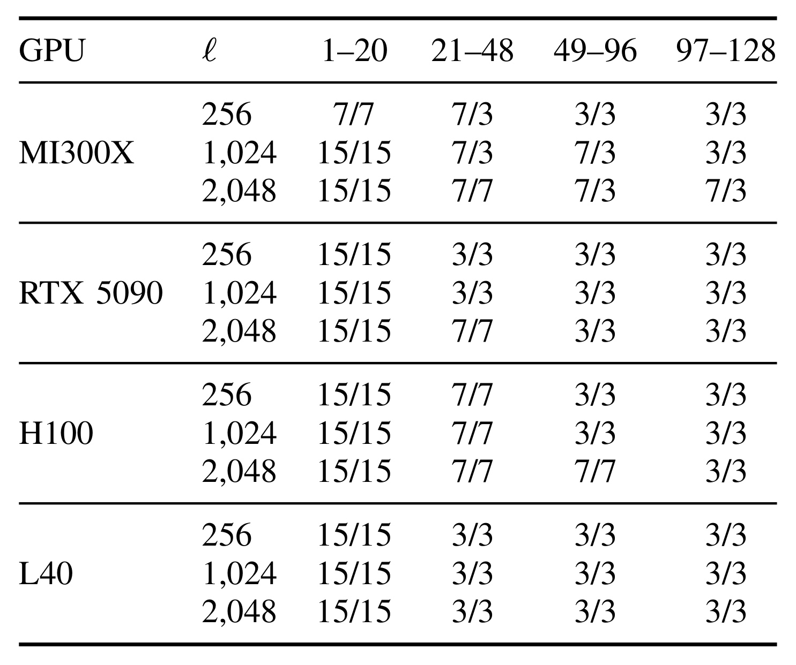
Table VI 的列头改成一至二十、二十一至四十八、四十九至九十六、九十七至一百二十八四个有效批大小区间，一个单元格的两个值依次对应半精度和八位缓存，部署时只取已固定精度的那一个。RTX 5090 的二千零四十八输出档在前两段取十五与七，之后取三，短输出档则从第二段就取三。MI300X 的同一长输出负载从四十九路开始出现七与三并列，说明同一批区间换缓存精度也会改变最优草稿。H100 的长输出半精度直到第三段仍取七，L40 从第二段起只取三。提交并发作为查表的启动输入，解码步内则随请求进出选择当前区间。策略只在锚点静态测量基础上划区，动态效果要看运行轨迹在各区间停留多久。某个区间出现较长草稿，可以解释该负载为什么值得测试，无法单独证明全轮收益来自那个区间。论文的留卡评估也没有运行由 Jev 分数派生的另一张动态映射。
3.4 MagicDec 的比较覆盖整套运行路径
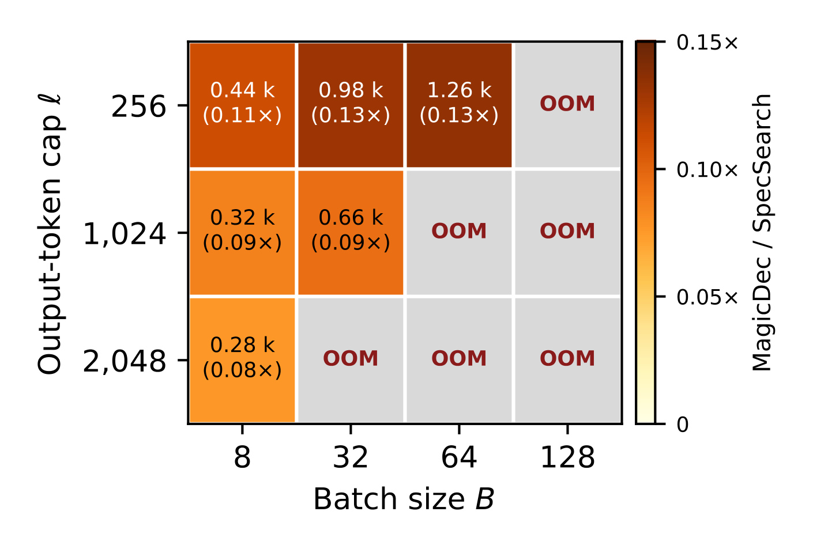
Figure 3 横轴是提交并发，纵轴是输出上限，彩色格内先写 MagicDec 的千令牌每秒，再写它占 SpecSearch 的吞吐比例，右侧色条也以这个比例为尺度。十二格中六格发生显存不足，最长输出在八路才有可比数。能够共同完成的六格里，MagicDec 为零点二八至一点二六千令牌每秒，相对比例约零点零八到零点一三。两者对齐了设备、目标模型与提示集合，但是 MagicDec 此处使用稀疏缓存、自推测、半精度级别的 BF16 缓存和固定批，也没有请求补入。SpecSearch 走带分页缓存和连续批处理的 vLLM，还能联合选择缓存精度及推测策略。热图由此说明两套整栈在该复现设置下可运行的范围和完成工作量相差很大。比较没有把调度、缓存精度和推测策略分别固定，图中比例应留在这节的整栈语境。灰格表示无法启动或完成对应配置，不能当成实测零吞吐放进可运行格的平均。如果将请求到齐的时间和是否允许补入也对齐，才有条件进一步拆分两套调度的影响。
3.5 分开检验三类量化
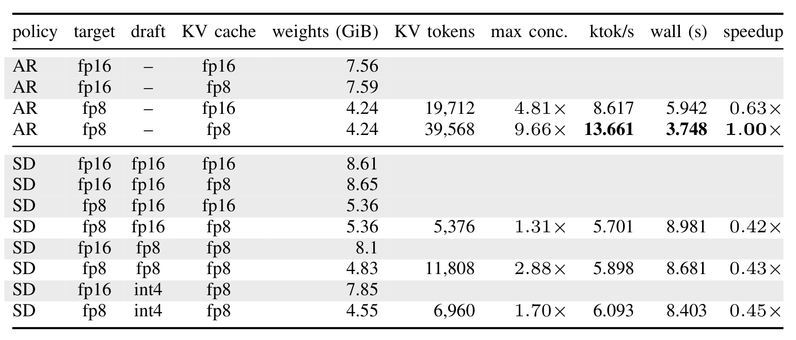
Table VII 固定在更紧的八 GiB 和四千零九十六输出场景。左侧四列先说明模式、目标和草稿精度、缓存精度，右侧才给权重用量、可用缓存、理论并发、令牌率和墙钟。灰底且空着性能字段的配置超出预算，目标模型改为八位才为可行的推测组合留出空间。最佳八位目标、八位缓存的自回归有三万九千五百六十八个缓存位置，约十三点六六一千令牌每秒和三点七四八秒。可行的推测组合最高约六点零九三千令牌每秒，墙钟相对表中自回归基准仅约零点四五倍。即使量化草稿权重使某些组合变得可运行，推测所需的运行空间与额外计算仍然降低整体产出。压到这里时应将最优自回归保留为第一类动作。该表的最佳结果还使用了不同于主实验的目标精度，所以不能把两表绝对吞吐之间的差值归因于显存上限一个因素。同一张表把“能跑”和“划算”拆成相邻的列，灰格与低吞吐可行格都应保留。可行的几档推测也没有呈现草稿越小、缓存越大、吞吐越高的单调关系。八位目标配八位草稿时有一万一千八百零八个缓存令牌，换成四位草稿的行虽报告了更小的权重用量，缓存却只有六千九百六十个，端到端令牌率略高。表格没有把每行剩余空间的运行时构成完整列出，所以权重列无法直接解释这种排序。在复核这个现象前，应先确认引擎实际分给缓存页多少内存、不同精度路径用了哪些缓冲。这个对照也是式（1）把权重、验证临时量和运行时常驻量分别列项的现实理由。
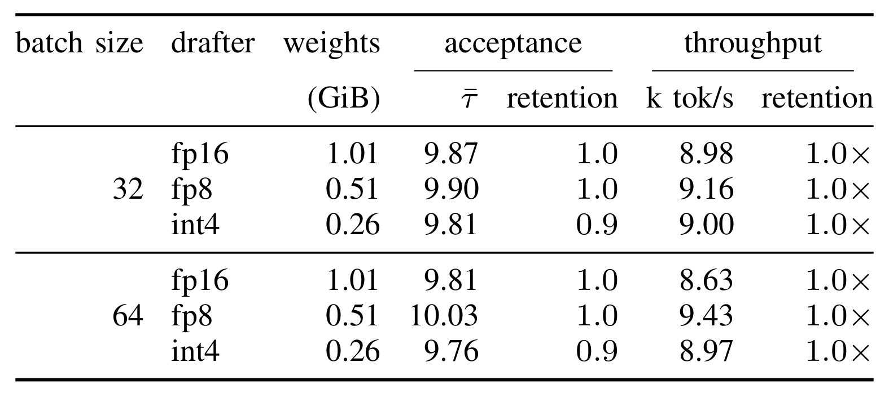
Table VIII 在 RTX 5090、二千零四十八输出上限、半精度目标和八位缓存下改变草稿权重，三十二和六十四两档都对照了权重 GiB、平均接受长度和输出吞吐。半精度草稿约占一点零一 GiB，八位约零点五一，四位约零点二六。三十二路的平均接受长度从九点八七变到九点九零或九点八一，六十四路从九点八一变到十点零三或九点七六。四位行的保留字段显示为零点九，直接用原始接受长度相除实际接近百分之九十九以上。六十四路八位行的吞吐原值是九点四三对八点六三，原表保留栏仍列为一点零倍，正文将量化描述为没有可测出的吞吐变化。表未给方差或显著性，因此适合确认的是草稿权重省了约一半和四分之三，接受长度仍接近。原始吞吐读数可以保留，统计上的不变或有增益还须按同一试验重测。例如四位并未在该表树立稳定的绝对速度优势，其直接价值是减少必须常驻的草稿权重。这组结果的可解释性还来自固定了目标和缓存。目标的校正分布没有随草稿压缩切换，接受长度可以直接反映提议端变化，即使值看起来接近，也需确认是每请求还是按每轮加权的读数。如果服务中新模型给出的平均接受长度降低，节省的权重空间能否抵掉新增目标轮次仍需按当前批量与输出长度计算。本表只有两个并发点和一个输出档，半精度、八位和四位也未必使用相同效率的内核。因而将显存读数带进成本预算容易，直接复制其吞吐比到别的卡或模型仍缺证据。
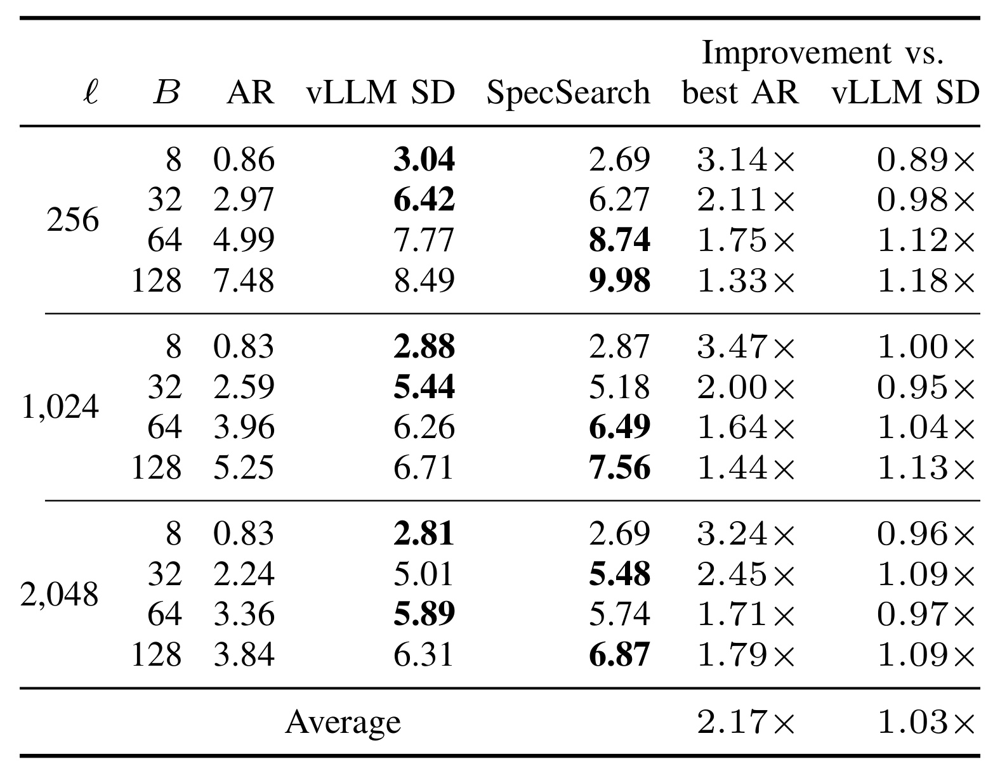
Table XI 把 MI300X 的目标权重换为八位，并仍用十五点七 GiB 预算。每行按输出和并发分别列出自回归、默认推测以及搭配动态映射的 SpecSearch，最右给出协议内相对比。平均相对自回归二点一七倍，看起来比主实验的一点六八更大，但这里的分母本身下降了。比较最长输出最大并发，目标量化时的动态策略、自回归与默认推测分别为六点八七、三点八四和六点三一千令牌每秒，均低于 Table III 在该格相应较强版本。八路短输出还出现动态二点六九低于默认三点零四的情况，整表相对默认推测平均只有一点零三倍。作者把目标量化后的掉速与目标分布改变、草稿接受受损联系起来，这可以解释推测路径上的部分变化。自回归没有草稿接受环节，本表也没有打开内核利用率和接受长度的逐项对照，故目标精度和实现变化在这里合在一起观察。对目标权重量化的评价还要配套质量门槛，尤其不能把新的采样分布当成原参考分布。短输出三十二路给出另一个例子。自回归为二点九七，动态策略达到六点二七，超过自回归两倍，但同格默认推测还有六点四二。推测部分已经带来很大差异，搜索出来的动态映射却没有胜过它。这个单元格可以用来设计更干净的验证，固定相同目标精度、相同缓存后端，只变草稿长度与动态开关。还可以对照量化前后相同输入的接受长度和完成令牌数，避免把参考模型的生成长度变化误当成内核加速。论文当前只允许看整体差异，具体原因要靠这样的逐项对照才能确认。
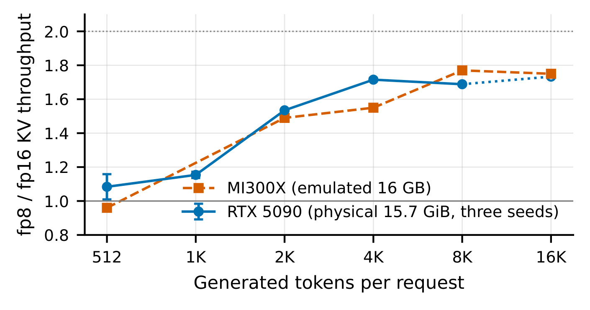
Figure 4 固定自回归与四十八路并发，横轴是每请求生成令牌数，纵轴是八位缓存除以半精度缓存的吞吐比。蓝线是 RTX 5090 标为十五点七 GiB 的测量，含三个随机种子，橙线是仿真十六 GB 预算的 MI300X。RTX 5090 在五百一十二输出处约一点零八倍，往后升到一万六千三百八十四处约一点七三倍，中间点也可见局部回落。MI300X 最短点在一倍以下，长输出端明显超过一倍。此处固定自回归正好排除了草稿接受率变化，看到的是缓存路径改动在长输出上的净效果。虚线所在的两倍水平也提醒读者，容量大致翻倍并不等价于令牌率翻倍，内核、其他固定开销和活动批都会限制吞吐变化。结合动机部分四千零九十六输出下约一点二四倍的推测结果，可以判断缓存降低精度有必要按实际长度分桶测，两个实验的模式与输出范围各自不同。这组折线也无法单独辨别缓存容量和注意力实现各自贡献多少，需要额外的运行计数。
3.6 留卡学习的平均收益与错选位置
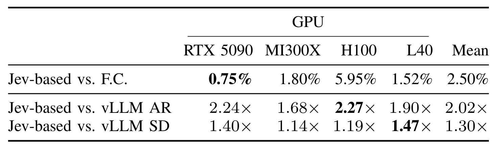
Table IX 每列是一张完全留出的部署卡，每折十二种负载。第一行是相对静态候选最优的平均吞吐损失，依次是 RTX 5090 百分之零点七五、MI300X 百分之一点八、H100 百分之五点九五、L40 百分之一点五二，四卡均值百分之二点五。后两行是实际选出配置对 vLLM 自回归与默认推测的吞吐比，均值分别为二点零二和一点三零。正文另给出相对匹配全校准结果的百分之九十七点三六保留率。该值应按作者单独报告的全校准比较口径记，第一行的静态最佳差距也要单列，不能从表中直接把平均两点五取补数代替它。每个测试配置在目标卡上运行以获得结果，这部分数据仅用于事后评估。候选提供、模型训练、检查点选择和下发动作都用源卡信息。平均吞吐保留接近全校准，说明源卡先验有价值，但具体错在哪个并发仍要看分格结果。这里比较的是选出配置的实际令牌率，既不能从分类得分读出质量置信度，也不包含随流量变化的阈值反馈。按卡读后两行也能看到不同参照物的影响。H100 相对自回归平均二点二七倍，四卡最高，相对默认推测则只有一点一九倍，原因至少包括默认推测的竞争力与策略误选。L40 相对自回归一点九零倍，低于 H100，而相对默认推测一点四七倍，高过其他三卡。若部署原来就开了推测，第二种比较更贴近能获得的收益。若部署原来不驻留草稿模型，第一种比较则应同时检查新增显存和可行性。表格没有给四卡合并流量或设备购置份额，均值应理解成这四张卡与指定网格的等权比较。
四十八格有三十八格距静态最优不足或等于百分之五。八路并发时，源卡微调后的平均差距由冻结模型的百分之十点七六降到一点八二，微调后十二格都选十五，冻结模型却在四张卡的二百五十六输出格选三。较大的错选集中在 H100 的三十二路，三个输出档都倾向选八位缓存、三令牌草稿，实测最优用七令牌，损失约百分之十三点七三到二十一点六四。这类错选若落在生产最密集的负载区，按实际流量加权的损失可能明显超过跨卡等权均值。与全校准相比，省去的是部署卡的配置搜索与初始化测量，源卡观测、适配训练和对照评估仍有成本。
为了说明可复核的预测基线，附录 B 的逆距离加权对源卡记录计算下式。
符号解释：$d_i^2$ 是固定特征空间中第 $i$ 条源观测到查询的欧氏距离平方，$w_i$ 是估计对数吞吐时的权重。常数避免相同特征造成分母为零，负二次幂让近邻占更大权重。这种基线无需训练参数，也依赖源数据覆盖。论文同时描述浅树、TabICL 和紧凑数值模型的训练或推理设定，主表的直接可读比较聚焦 Jev 与搜索及 vLLM 基线。附录给出 IDW 和 Jev 的静态选表及派生的动态规则，读者可以核对两者选了什么，不能据这些表给两种动态映射排吞吐名次。
4. 总结
4.1 实验支持的部署判断
这篇论文最有说服力的证据是同一模型和引擎下，改变负载就会使相对排序反转，而且这个反转包括回到自回归的决策。长输出的缓存压力与高并发的验证计算是可以分别测量的量。先做内存可行性筛选，再对能跑的配置直接测吞吐，既保留了成本模型的可解释性，也避免用理想屋脊线硬判哪个内核先饱和。全校准适合有部署机器且可以停留足够时间重复测量的场合，Jev 适合先为缺目标卡数据的相似配置提供静态起点。H100 中并发的失败例子提示，部署前核验值得优先落在实际负载最集中、且选择在短草稿与中等草稿之间分歧最大的几个点。
4.2 五个需要保留的边界
第一，只有一个目标模型和一个块扩散草稿器。更换成树状验证或自推测，会改变验证位置、权重和缓存项，可能移动计算交叉点，预测器也没有见过这种动作空间。第二，统一引擎预算和规整的负载网格便于控制变量，但不同提示长度、混合输出、突发到达与调度版本都会改变活动批曲线。尤其显存预测小误差依赖两张卡的启动初始化，无法凭峰值规格外推给任意部署栈。第三，质量在联合优化式中是约束，主文吞吐表没有给出量化在五套提示集上的逐集正确率、数值一致性或可靠阈值。量化目标权重或缓存时，仍需根据下游任务重新评估可接受的质量差。第四，源卡微调模型的动态映射没有端到端留卡运行证据。它的平均保留率只能描述文章实际测过的决策协议，H100 中并发的较大后悔也说明等权平均会压低关键场景的风险。第五，服务目标缺少首令牌、生成间隔和请求完成率，以及达到时延目标的请求吞吐。离线整批的墙钟收益也无法给出交互服务尾延迟的方向。
4.3 可复核的后续比较
先锁定容器、运行后端、GPU 预算、目标与草稿检查点、内核精度及提示，复跑同一并发网格。对每格同时记录可见输出令牌数、整批墙钟、实际活动批轨迹、接受长度和缓存抢占率，并检查较强自回归与较强默认推测各自的分母。那样才能解释为什么接近一倍的格会交换排名，也能复核目标八位时相对比上升而绝对产出下降的现象。
再用同一引擎回放包含短回答与长生成的到达流，按线上定义同时统计首令牌和生成间隔，观察给定质量和时延约束下每秒完整服务的请求数。加上取消、超时和等待时间之后，才可以判断吞吐最优策略是否也适合面向用户的在线负载。对推荐链路而言，离线文本生产可以采用令牌吞吐验收，在线解释生成应按客户端的请求达标口径复核，两组结论可分别用于各自调度。
最后把预测器的决策与部署前少量实测分成两个明确的对照。在完全留卡中保持动作生成独立，再专门对 H100 三十二路提供几次小预算确认，比较零样本、少量实测与全校准的总代价和吞吐后悔。动态规则需要额外跑相同轨迹，并核对每个区间的停留时间和低并发长草稿是否抵得过批切换。对于寻求跨设备迁移的服务团队，这组测量能够直接回答少跑多少校准任务，以及高频档影响多大。